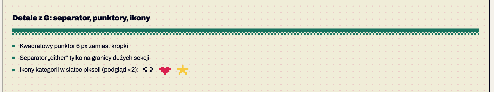
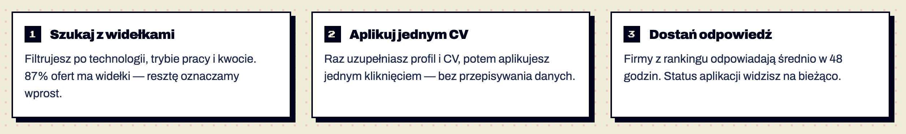

Komponenty / Detale graficzne
Detale graficzne
stabilny Detale graficzne · od 1.0
Elementy, które niosą pikselowy charakter bez obciążania czytania: separator „dither”, kwadratowe punktory, pikselowe ikony (kłódka, ikony kategorii), kroki „Jak to działa”. Potwierdzone w dokumentacji S01 §5.


Anatomia i komponenty składowe
| Część / rola | Wymagana / opcjonalna | Składnik / źródło | Co można zmienić / status |
|---|---|---|---|
| separator dither | opcjonalny | .dither | między dużymi sekcjami Potwierdzone w dokumentacji |
| punktor 6 px | opcjonalny | .list-square | Potwierdzone w dokumentacji |
| kłódka 8×9 | przy blokadzie | .lock | Potwierdzone w dokumentacji |
| ikony 8×8 | opcjonalne | box-shadow / SVG crispEdges | Potwierdzone w dokumentacji |
| krok z numerem | opcjonalny | panel + licznik (S10) | poza systemem Szacunek z obrazu |
Warianty i zastosowanie
| Oś | Wartość | Kiedy użyć | Co się zmienia | Ograniczenia / status / źródło |
|---|---|---|---|---|
| — | — | — | — | Nie dotyczy — elementy bez wariantów |
Zachowanie, treści i lokalizacja
Statyczne.
Zalecane i niewskazane
| Zalecane — przykład | Niewskazane — przykład | Powód / status / źródło |
|---|---|---|
| ilustracje tylko w palecie SNES | zdjęcia stockowe z gradientami | Potwierdzone w dokumentacji S01 §5 |
| separator na granicy dużych sekcji | separator między każdym akapitem | szum Potwierdzone w dokumentacji |
Tokeny i style
| Zastosowanie | Token | Tryb / wariant | Wartość | Źródło | Status |
|---|---|---|---|---|---|
| dither | --action | #17735F | S01 | Potwierdzone w dokumentacji |
Wymiary, odległości i układ
| Elementy / krawędzie | Wariant | Wartość / relacja | Token | Reguła / źródło / dokładność |
|---|---|---|---|---|
| dither | — | 8 + 8 px | — | Potwierdzone w dokumentacji |
| punktor | — | 6 px, wcięcie 18 px | — | Potwierdzone w dokumentacji |
| ikony | — | skala ×2/×3, pixelated | — | Potwierdzone w dokumentacji |
Typografia
| Rola tekstu | Styl | Font / weight | Rozmiar | Interlinia | Tracking | Kolor / zachowanie / status |
|---|---|---|---|---|---|---|
| Nie dotyczy |
Właściwości i atrybuty
| Właściwość / atrybut | Typ | Wartości pokazane / opisane | Domyślna | Efekt i zastosowanie | Zależności / status / źródło |
|---|---|---|---|---|---|
| kolor | token | --action (dither, punktor), currentColor (kłódka) | — | — | Potwierdzone w dokumentacji |
Cel: WCAG 2.2 AA. Statyczne materiały i testy automatyczne w Chrome nie dowodzą zgodności — miejsca oznaczone „Do testu we wdrożeniu” wymagają testu z czytnikiem ekranu (design.md §0.6).
| Obszar | Ustalenie lub wymaganie | Dowód / status | Kryterium / wzorzec | Jak sprawdzić |
|---|---|---|---|---|
| dekoracje | aria-hidden / role=presentation | Potwierdzone w dokumentacji | WCAG 1.1.1 | — |
Źródła
S01 §5; S04; S10.